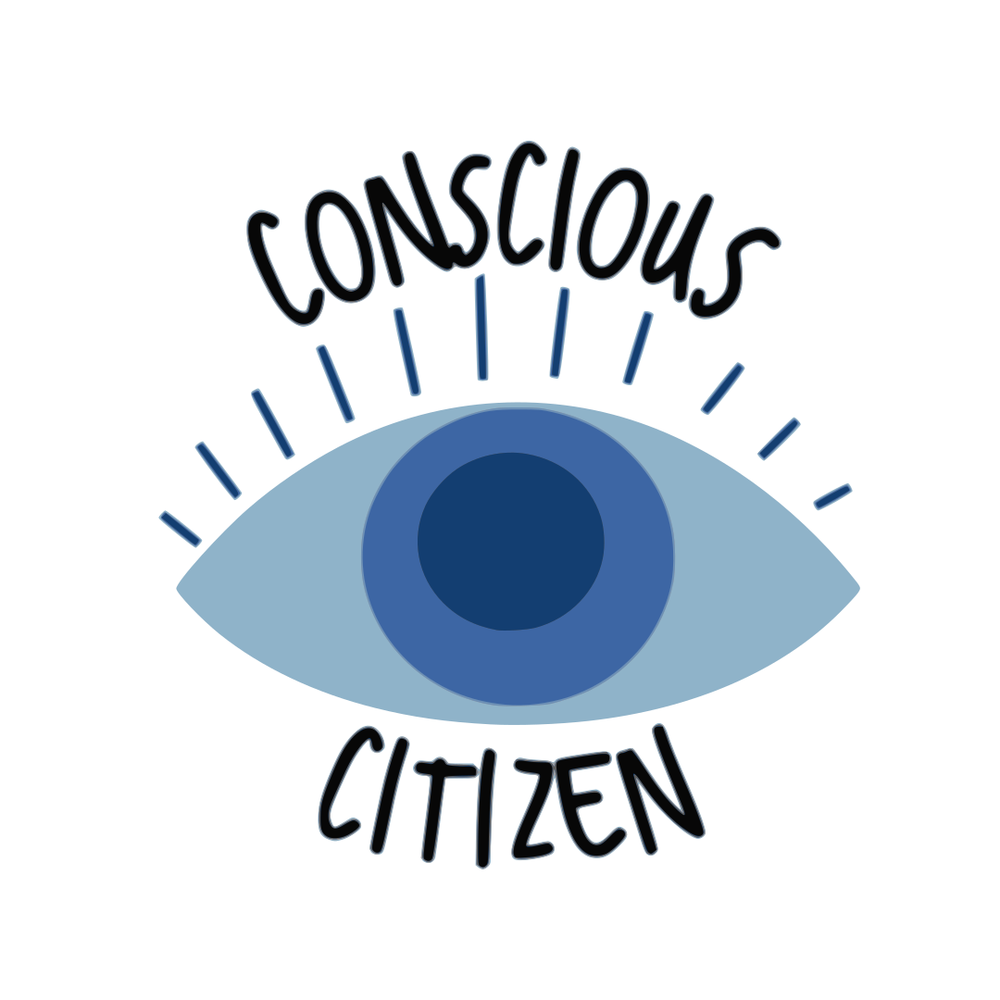

Conscious Citizen

Our Vision for this platform is to provide individuals with greater access to accurate information regarding international participatory democratic processes and local Montreal sustainability processes
Sustainability Initiatives
Participatory Democracy